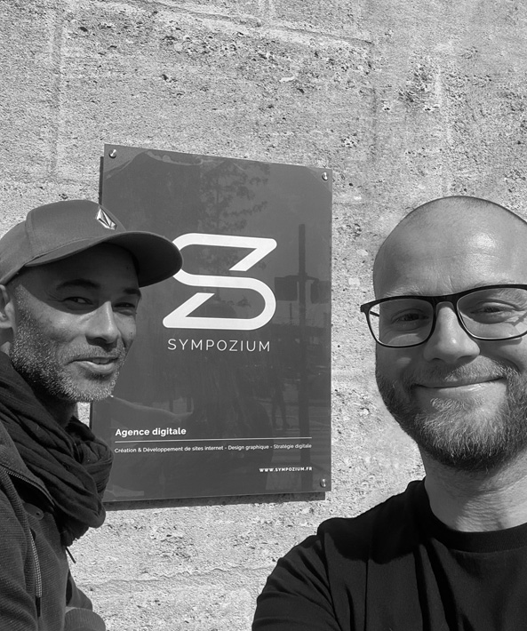

Une sensibilité artistique unique
Notre démarche puise ses forces dans les Arts Appliqués. Le dessein d'un projet passe nécessairement par la réflexion graphique manuelle et conceptuelle. Nous matérialisons vos idées pour initier des discussions porteuses de sens.
Un développement web exigeant
Derrière un beau visuel se cache une ingénierie informatique rigoureuse. Notre équipe technique maîtrise les langages et architectures d'aujourd'hui et de demain, pour créer des solutions d'une vélocité et d'une sécurité sans faille.
Une culture de proximité
Au-delà du simple rôle de prestataire, nous nous positionnons comme un partenaire disponible et réactif, prêt à relever tous vos défis technologiques et de communication.